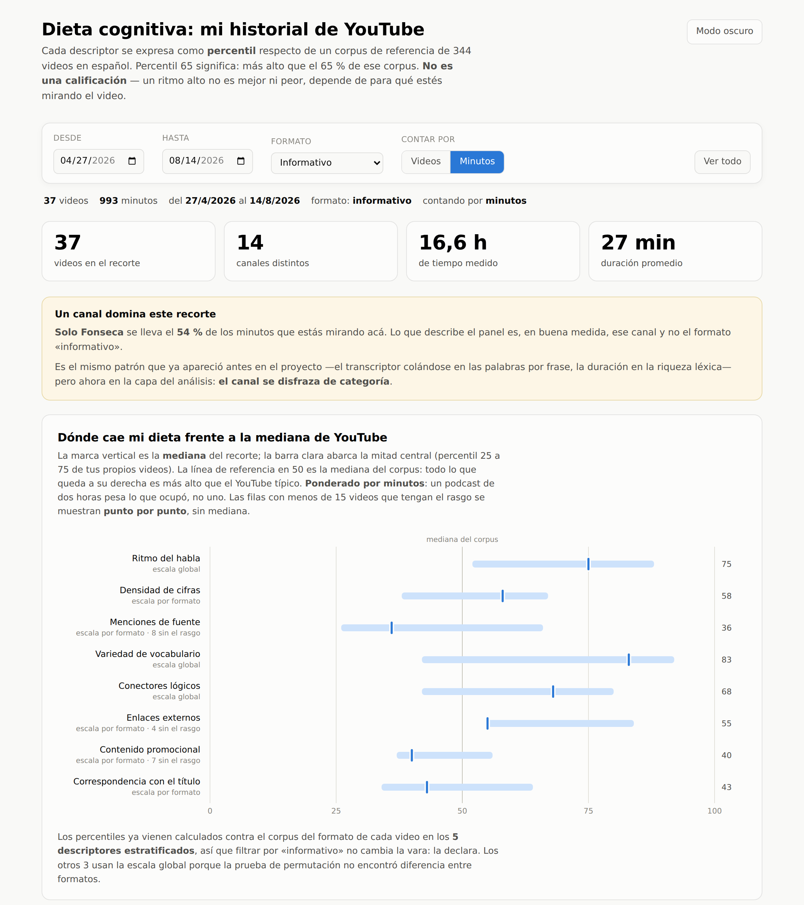

Es el «por porción» frente al «por 100 g» del envase, y no es cosmético: al pasar de videos a minutos, la variedad de vocabulario cae del percentil 76 al 43 y la densidad de cifras sube del 60 al 72. Un podcast de dos horas pesa lo que ocupó, no uno.
Recorte vacío: si los filtros no dejan ningún video, la línea de estado lo dice y los gráficos no se dibujan — no hay ejes vacíos ni medianas de cero. Recorte pequeño: el piso de n cambia la forma del gráfico en vez de ocultarlo. Videos sin panel: el script avisa al terminar cuántos vistos quedaron afuera y por qué (sin transcripción, o sin panel calculado todavía).
El HTML es una foto, no un espejo: trae los datos incrustados, por eso abre sin servidor ni credenciales. El script que lo genera termina diciendo cuántos videos vistos quedaron afuera y por qué — sin ese aviso, «79 videos» da sensación de completo cuando hay decenas esperando.
docs/dieta_cognitiva.html generado por
backend/scripts/build_dashboard.py, con el filtro de formato en «informativo» y el
denominador en minutos. Todo lo que se ve en esta pantalla está implementado y funciona hoy.
Los percentiles no se calculan en el navegador: vienen de content_features.panel,
medidos por el mismo módulo que usa el panel del video.